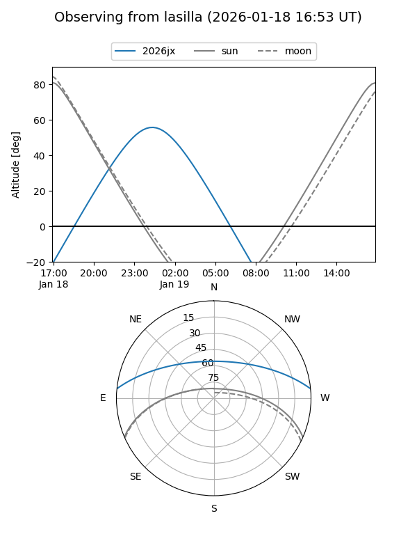
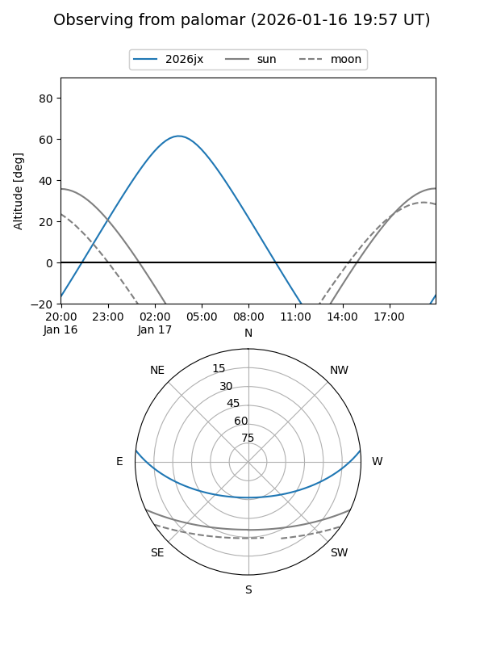
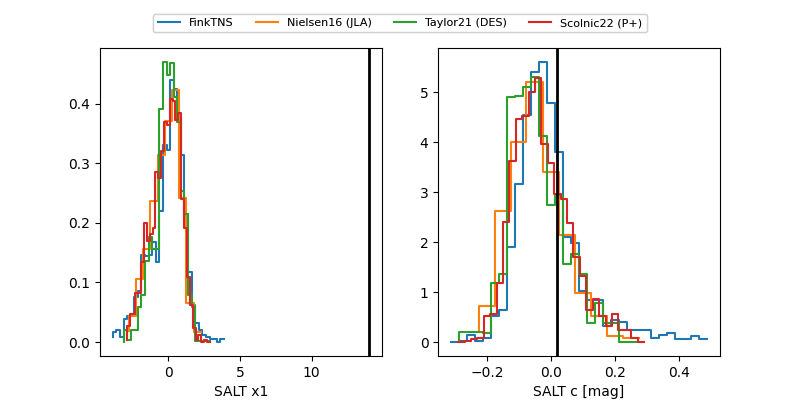

2026jx
Target 2026jx at 2026-01-15 08:40
Aliases and brokers:
FINK: link
Lasair: link
ALeRCE: link
TNS: link
YSE: link
alt names
ZTF26aabevlu (ztf,fink_ztf)
2026jx (tns,yse)
PS26bi (panstarrs)
Coordinates:
equatorial (ra, dec) = 52.2262,+4.80798
equatorial (HMS+DMS) = 03:28:54.28,+04:48:28.72
galactic (l, b) = (178.9597,-40.34674)
Flags:
Photometry:
last ztfg=20.28
1 ztfg detections
Lightcurve

Visibility


Additional plots
